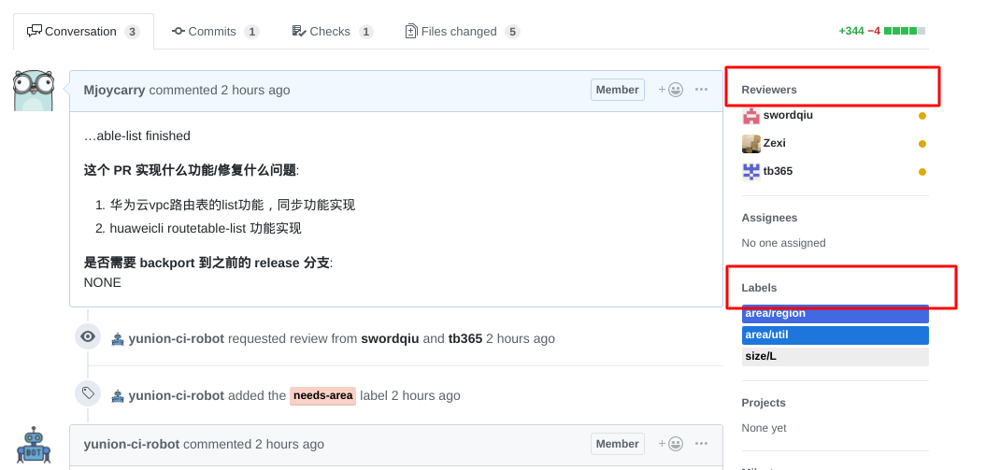
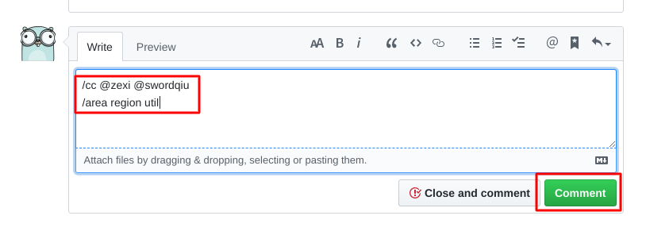

开发贡献
安装 Go
Golang 版本要求 1.12 以上
安装go环境参考: Install doc
编译 onecloud 组件
Fork 仓库
访问 https://github.com/yunionio/onecloud ，将仓库 fork 到自己的 github 用户下。
Clone 源码
git clone 前确保 GOPATH 等环境变量已经设置好，clone 你自己 fork 的仓库
$ git clone https://github.com/<your_name>/onecloud $GOPATH/src/yunion.io/x/onecloud
$ cd $GOPATH/src/yunion.io/x/onecloud
$ git remote add upstream https://github.com/yunionio/onecloud编译
# 编译所有组件
$ make
# cmd 目录下面存放着所有的组件:
$ ls cmd
...
ansibleserver climc glance keystone qcloudcli ucloudcli
awscli cloudir host lbagent region webconsole
# 可以编译cmd下制定的组件，比如：编译 region 和 host 组件
$ make cmd/region cmd/host
# 查看编译好的二进制文件
$ ls _output/bin
region host开发流程
- 从 master checkout 出 feature 或者 bugfix 分支
# checkout 新分支
$ git fetch upstream --tags
$ git checkout -b feature/implement-x upstream/master- 在新的分支上进行开发
- 开发完成后，进行提交PR前的准备操作
$ git fetch upstream # 同步远程 upstream master 代码
$ git rebase upstream/master # 有冲突则解决冲突
$ git push origin feature/implement-x # push 分支到自己的 repo- 在GitHub的Web界面完成提交PR的流程

- 提完 PR 后请求相关开发人员 review，并设置Labels来表明提交的代码属于哪一个模块或者哪几个模块

- 或者通过添加评论的方式来完成上一步；评论 “/cc” 并 @ 相关人员完成设置reviewer，评论/area 并填写label完成设置Labels

所有Label都可以在issues——Labels下查询到，带area/前缀的Label均可以使用评论”/area”的形式添加
- 如果是 bugfix 或者需要合并到之前 release 分支的 feature PR，需要额外使用脚本将此PR cherry-pick 到对应的 release 分支
# 自行下载安装 github 的 cli 工具：https://github.com/github/hub
# OSX 使用: brew install hub
# Debian: sudo apt install hub
# 二进制安装: https://github.com/github/hub/releases
# 设置github的用户名
$ export GITHUB_USER=<your_username>
# 使用脚本自动 cherry-pick PR 到 release 分支
# 比如现在有一个提交的PR的编号为8，要把它合并到 release/2.8.0
$ ./scripts/cherry_pick_pull.sh upstream/release/2.8.0 8
# cherry pick 可能会出现冲突，冲突时开另外一个 terminal，解决好冲突，再输入 'y' 进行提交
$ git add xxx # 解决完冲突后
$ git am --continue
# 回到执行 cherry-pick 脚本的 terminal 输入 'y' 即可去 upstream 的 PR 页面, 就能看到自动生成的 cherry-pick PR，上面操作的PR的标题前缀就应该为：Automated cherry pick of #8，然后重复 PR review 流程合并到 release
部署
TODO